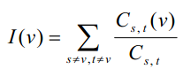

在社交网络（socialnetwork）的研究中，我们常常使用图论概念去解释一些社会现象。不妨看这样的一个问题。
在一个社交圈子里有n个人，人与人之间有不同程度的关系。我们将这个关系网络对应到一个n个结点的无向图上，
两个不同的人若互相认识，则在他们对应的结点之间连接一条无向边，并附上一个正数权值c，c越小，表示两个人
之间的关系越密切。我们可以用对应结点之间的最短路长度来衡量两个人s和t之间的关系密切程度，注意到最短路
径上的其他结点为s和t的联系提供了某种便利，即这些结点对于s和t之间的联系有一定的重要程度。我们可以通过
统计经过一个结点v的最短路径的数目来衡量该结点在社交网络中的重要程度。考虑到两个结点A和B之间可能会有
多条最短路径。我们修改重要程度的定义如下：令Cs,t表示从s到t的不同的最短路的数目，Cs,t(v)表示经过v从s
到t的最短路的数目；则定义

为结点v在社交网络中的重要程度。为了使I(v)和Cs,t(v)有意义，我们规定需要处理的社交网络都是连通的无向图
，即任意两个结点之间都有一条有限长度的最短路径。现在给出这样一幅描述社交网络的加权无向图，请你求出每
一个结点的重要程度。